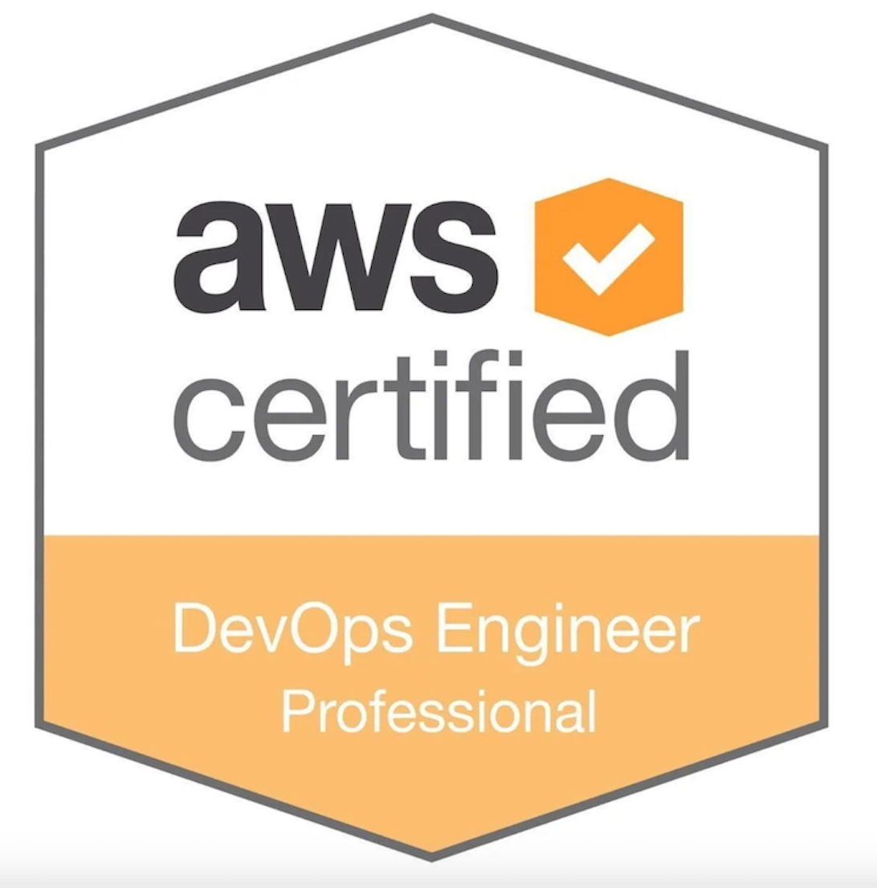
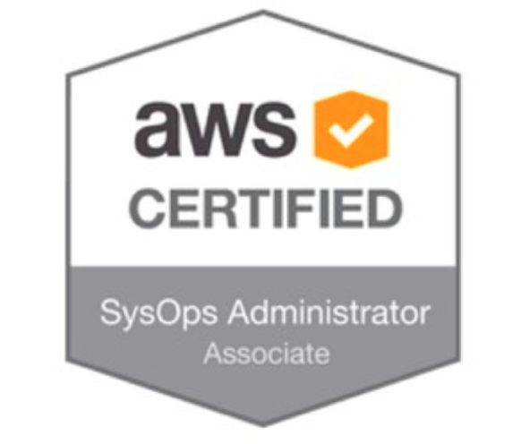

Brian Adams
b@contrasting.org
TECHNICAL SUMMARY
•
LAMP Administrator 6+ years
•
Multiple AWS Certifications (SysOps, Developer, DevOps, Architect Associate)
•
Customer facing via slack, email, phone, and in-person communication
PROFESSIONAL EXPERIENCE
Intersection (full time)
New York, NY
Senior Site Reliability Engineer - May 2019 - January 2020
•
Implemented software releases for over 5,000 kiosks across different markets through
Buildkite + Ansible combination. Buildkite was used as a deployment pipeline while
Ansible was used for installing new software releases.
•
Used combination of Docker and Docker Swarm within AWS for managing services
•
Advocated for, and built out, initial Terraform + Atlantis GitOps implementation that
enabled releasing changes in AWS through code that can create and destroy resources
vs just creating them in Ansible.
•
Worked with developers to ensure application deploys completed successfully through
deployment pipelines
•
Python scripting
Foghorn Consulting (full time)
San Francisco, California
DevOps Consultant II - April 2018 - April 2019
DevOps Consultant I - January 2016 - April 2018
•
Implemented disaster and recovery tools with quick RTO via S3, snapshot backups for RDS instances and cluster,
EC2 instances, and minimal, multi-region, pilot light environments (i.e RDS multi-az instances of given size to be scaled up)
•
Deployed Kubernetes update via Terraform to fix severe security vulnerability
•
Deployed highly scalable production websites via S3, Aurora, Auto Scale, CloudFront, ELB, Route 53, and LetsEncrypt
•
Reduced monetary costs by automating and synchronizing deployments through Terraform, resource tagging best practices
•
Reduced tech debt by implementing modules through Terraform, creating Ansible playbooks when Chef not an option
•
Public Github Links: https://github.com/cloudpassage-community/policygen
•
Worked with developers to ensure projects completed within budget and timeframe
•
Python scripting
Self-employed
San Francisco, California
September 2015 - December 2015
Open Source Contributor (Ansible)
•
Public Github Links: https://github.com/ansible/ansible-modules-core/pull/4614
Rackspace (full time)
Austin, Texas
May 2013 - August 2015
Linux Administrator I
• Linux Administration (spinning up/down servers, configuring firewall rules, backups, standard networking)
• Apache Administration (configuring virtual hosts, basic htaccess rewrite rules, CDN recommendations)
• MySQL Administration (backup/import databases, granting permissions, configure master/slave replication)
• PHP Configuration
PROFESSIONAL INTERESTS AND RESEARCH
Kubernetes Homelab - https://github.com/autotune/kubernetes